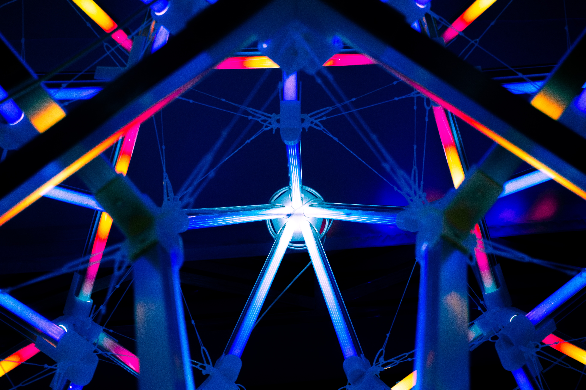

- Team
- Project
- Lab
- Model
- Parts
- Improvement
- Contributions
- Judging

Our project is a game based on synthetic biology.So our proposed audience is students and people those who are interested in synthetic biology.This year’s Education is aimed at college students, middle school students, primary school students, people with disabilities and the public. For different groups of people, we have adopted different forms of publicity, comics, science books, videos and so on, hoping to help them understand iGEM and synthetic biology.
In late 2019, we promoted the 2020 iGEM competition. More than 200 students from different colleges attended the activity. We invited Mr. Wang, from the school affairs office. He said iGEM is a level competition and encouraged students from all colleges to actively enroll in the research of synthetic biology and iGEM. The students showed great interest in our activity and synthetic biology. After the meeting, many students asked the 2019 team members about synthetic biology and iGEM, and expressed their willingness to join the iGEM family.
By using the time between classes, our team members introduced the synthetic biology and iGEM to freshmen from Institute of Life Science and handed out home-made handbooks about synthetic biology. The freshmen showed great interest in the subject and the competition. And about their questions, we answered one by one patiently.
Due to COVID-19,all of the college students have lesson online.In China, an APP called Chaoxing Learning is widely used by all college students. In order to make better use of the network as a resource, we set up an educational platform on this APP where we regularly upload videos and articles. We hope that through this platform which is used by college students all over the country, more and more people can learn about the synthetic biology.

Figure 2. TAG lipase deletions result in greatly increased lipid accumulation in LDs. (A, B) Plots showing the mean Nile red fluorescence intensities in single cells from indicated strains. The samples were analyzed at 24 hour time point (A) and 72 hour time point (B). The bars show median and its 95% confidence intervals. ****, **, *, and ns note p-values <0.0001, <0.01, <0.05, and >0.05, respectively, of pair-wise comparisons with wild-type using Mann-Whitney U test.
Due to COVID-19,all of the college students have lesson online.In China, an APP called Chaoxing Learning is widely used by all college students. In order to make better use of the network as a resource, we set up an educational platform on this APP where we regularly upload videos and articles. We hope that through this platform which is used by college students all over the country, more and more people can learn about the synthetic biology.

The lipid accumulation was also measured at 72 hours following dilution. In this time point, the culture had reached the stationary phase, and LDs were clearly detectable with Nile red staining for all tested strains, including the wild-type (Fig 2B). Lipid accumulation is known to increase in S. cerevisiae cells upon nutrient depletion (Werner-Washburne et al., 1993), and our results reveal that the difference between wild-type and TAG lipase deletion strains is considerably reduced in the stationary phase cells (Fig 2B). In the 72-hour time point, we did not observe a statistically significant difference between wild-type and the single tgl4Δ or double tgl3Δ tgl4Δ deletion cells. Single deletion of TGL3, which had the largest effect in the 24-hour time point, also led to increased LD staining intensity at 72 hours. We observed the highest intracellular lipid levels with the triple tgl3Δ tgl4Δ tgl5Δ deletion strain, and interestingly, in this time point, the zwf1Δ strain had considerably lower LD staining, comparable to the level of the wild-type strain (Fig 2B). Although the lipid levels of zwf1Δ strain were not lower in the 24-hour time point, ZWF1 deletion could be expected to result in decreased lipid synthesis, as Zwf1 is required to regenerate NADPH, a critical cofactor in fatty acid synthesis. Taken together, by preventing TAG degradation with triple deletion of TAG lipases, we have achieved a considerable increase in lipid production compared to the wild-type strain.